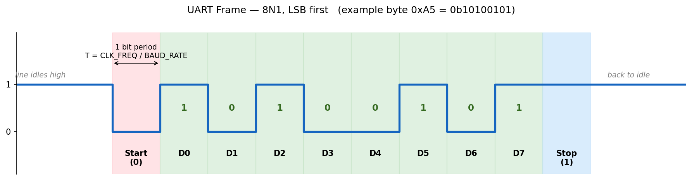
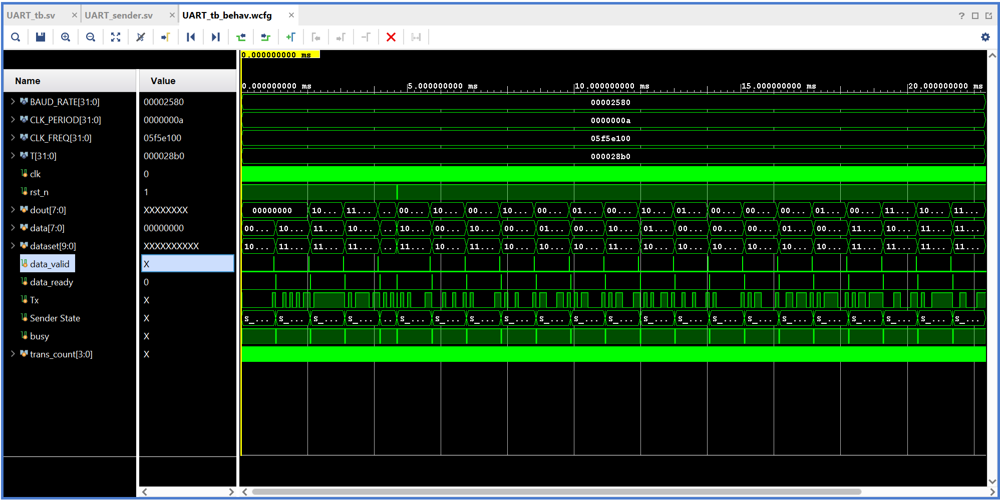

An 8N1 transmitter and receiver with no board tied to it. Clock frequency and baud rate are parameters, every signal is a port, and the repository ships no constraints file on purpose.
Most UART examples I found were written against one board, with pin assignments baked into the source. That makes them hard to reuse. I wrote this one as a core instead: clock frequency and baud rate have no defaults and must be set at instantiation, so the compiler complains if you forget, and the repository deliberately contains no constraints file. Whoever uses it maps the pins for their own board.
The line idles high. A falling edge starts a frame, eight data bits follow LSB first, and a stop bit returns the line to idle. On the receive side the incoming line is double-registered before anything looks at it, because it arrives from a different clock domain and a metastable flop will otherwise decide the value of a bit.
The receiver waits for the start bit's falling edge and then samples each bit in the middle of its period rather than at the edge, which buys the most timing margin against a baud rate that never divides evenly into the clock. That single choice is the difference between a link that works and one that corrupts a byte every few hundred frames.
The data_ready input needs a single-cycle pulse. A raw button press lasts millions of clock cycles at 100 MHz and would fire frame after frame, so the documentation says plainly that it has to be debounced and edge-detected upstream. Writing that down was part of the exercise: the core is only reusable if the assumptions it makes are visible.

The testbench wires the sender's Tx straight to the receiver's Rx, so every byte travels the full serialize and deserialize path and is compared against what was sent. It runs at 100 MHz and 9600 baud in Vivado xsim, reaches the end of the run at about 22.4 ms of simulated time, and reports no errors. The sources also compile clean under the strict slang SystemVerilog compiler.
| T1 | Every register in both modules checked at its reset value, with Tx idling high. |
| T2 | Directed patterns: 0x00, 0xAA, 0xFF and a mixed byte. |
| T3 | Reset asserted halfway through a frame, then a check that the next byte still transfers. |
| T4 | Sixteen random bytes, each compared at the receiver output. |

| Port | Dir | Width | Description |
|---|---|---|---|
| clk | in | 1 | System clock |
| rst_n | in | 1 | Active-low synchronous reset |
| data | in | 8 | Byte to transmit |
| data_ready | in | 1 | One-clock pulse to latch data and start; ignored while busy |
| Tx | out | 1 | Serial output line |
| busy | out | 1 | High while a frame is transmitting |
| Port | Dir | Width | Description |
|---|---|---|---|
| clk | in | 1 | System clock |
| rst_n | in | 1 | Active-low synchronous reset |
| Rx | in | 1 | Serial input, double-registered internally for metastability |
| dout | out | 8 | Last received byte, updated at the end of each frame |
| data_valid | out | 1 | Pulses high for one clock when a new byte lands |
UART_sender #(.BAUD_RATE(115200), .CLK_FREQ(100_000_000)) u_tx (
.clk(clk), .rst_n(rst_n),
.data(data), .data_ready(data_ready),
.Tx(uart_tx_pin), .busy(tx_busy)
);
UART_receiver #(.BAUD_RATE(115200), .CLK_FREQ(100_000_000)) u_rx (
.clk(clk), .rst_n(rst_n),
.Rx(uart_rx_pin), .dout(rx_byte), .data_valid(rx_valid)
);
The frame format is fixed at 8N1, with no parity bit and no configurable stop bits. The receiver takes one sample at mid-bit rather than oversampling at 16× with majority voting, which is the usual next step for noisy lines.